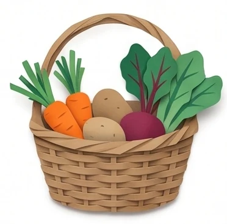
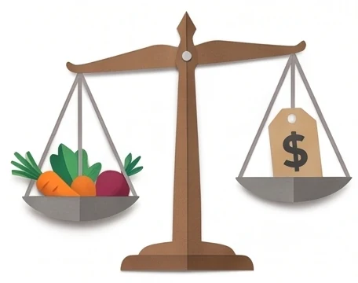

Oferta alimentaria
Identificar alimentos saludables y no saludables presentes en los espacios de compra y consumo.
Economía Social · Precios · Orgánicos · Residuos · Alimentación
ESTUDIO · UNIVERSIDAD DE AYSÉN
Buscamos conocer la oferta de alimentos saludables y no saludables, sus precios y acceso, y las preferencias alimentarias de quienes estudian en Aysén.
Investigar para intervenir. Intervenir para investigar.
Evidencia para orientar y evaluar políticas internas universitarias.
CONOCER PARA TRANSFORMAR
El estudio reúne información para comprender qué alimentos están disponibles, cuánto cuestan y qué prefieren las y los estudiantes.

Identificar alimentos saludables y no saludables presentes en los espacios de compra y consumo.

Observar precios y condiciones de acceso a alimentos habituales para la comunidad universitaria.
Conocer elecciones, gustos y necesidades para que las decisiones se basen en evidencia situada.
Busque la visita por código de local y continúe con Disponibilidad o Precios.
Necesita conexión a internet para buscar y cargar la visita en este dispositivo.
NUEVA VISITA
Esta ficha abre una visita y comparte la identificación con sus pautas. Cada instrumento se completa y guarda por separado.
Recorre el local y marca lo que encuentres. La ayuda reúne ejemplos para acompañarte en los casos que suelen generar dudas.
Cuando no encuentres un alimento o una preparación, marca «No» y continúa con el siguiente.
Cuéntanos qué encontraste para cada alimento. Anota el precio más bajo y agrega el más alto cuando haya otra opción que cumpla la pauta.
Revisa lo que anotaste. Confirma el precio más bajo y, cuando encontraste otra opción que cumple la pauta, también el más alto.
Anota el precio más bajo y agrega el más alto si encontraste otra opción que cumple la pauta. Si no encuentras el alimento, cuéntanoslo en «Resultado del registro».
Pauta opcional. Para clasificar automáticamente como «minimarket» se requiere autoservicio o atención mixta y cumplir al menos dos de los tres criterios de surtido. Una corrección manual exige justificación. Abrir la guía de clasificación
Si encuentras un producto que viene de Aysén, cuéntanos qué lo confirma: una etiqueta, un cartel o lo que te indique quien atiende. Si sabes que es de la región pero no conoces la comuna, elige «Sin información de comuna» y anota la evidencia.
Precio